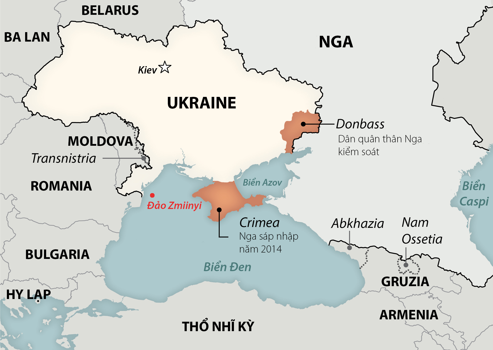

Quân đội Ukraine cho biết đã dùng máy bay không người lái tập kích vị trí lực lượng Nga trên đảo Zmiinyi tại Biển Đen.
Bộ tư lệnh Tác chiến miền Nam của quân đội Ukraine ngày 3/5 công bố video cho thấy máy bay không người lái (UAV) Bayraktar TB2 tấn công vào khu vực gần tháp thông tin liên lạc cùng một mục tiêu dường như là kho đạn. Lực lượng này cho biết đây là hai vị trí của lực lượng Nga trên đảo Zmiinyi ở Biển Đen.
Video vụ tập kích bằng UAV Bayraktar TB2 được quân đội Ukraine công bố ngày 3/5. Video: Bộ tư lệnh Tác chiến miền Nam Ukraine.
Quân đội Ukraine không nói rõ thời điểm diễn ra vụ tập kích. CNN đã xác định được vị trí địa điểm trong video và tính xác thực của nó.
Nga chưa bình luận về thông tin này. Quân đội Ukraine ngày 26/4 cũng tuyên bố tập kích trạm kiểm soát cùng hệ thống phòng không của Nga trên đảo Zmiinyi.
Phía Ukraine cho rằng toàn bộ binh sĩ trên đảo Zmiinyy thiệt mạng trong giao tranh với Nga. Tuy nhiên, Bộ Quốc phòng Nga sau đó công bố video cho thấy 82 binh sĩ Ukraine trên đảo Zmiinyy hạ vũ khí đầu hàng. Những binh sĩ này được Nga đưa về cảng Sevastopol tại bán đảo Crimea và trao trả cho Ukraine sau đó.
Vị trí đảo Zmiinyi. Đồ họa: Washington Post.